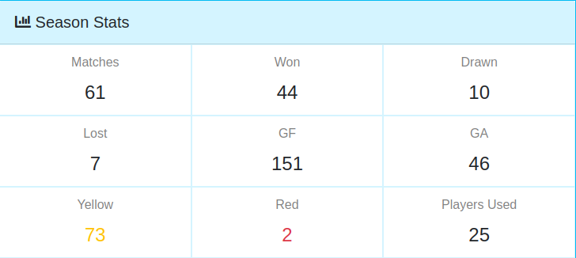
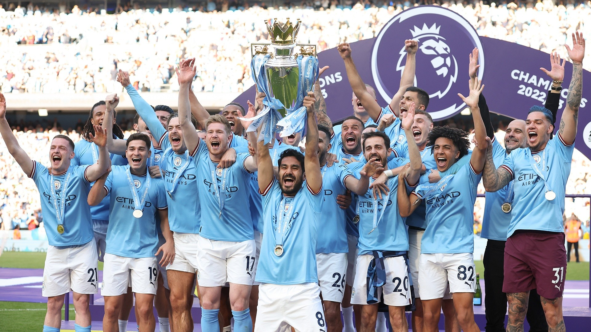
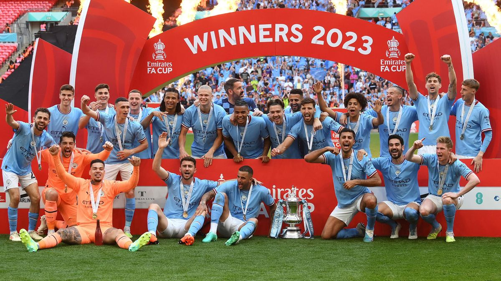
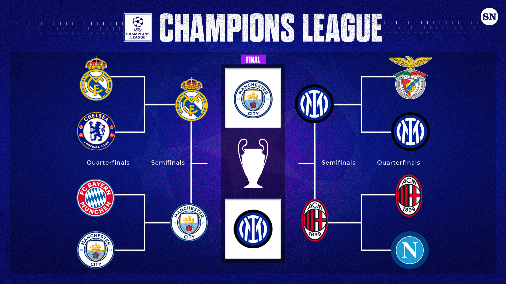
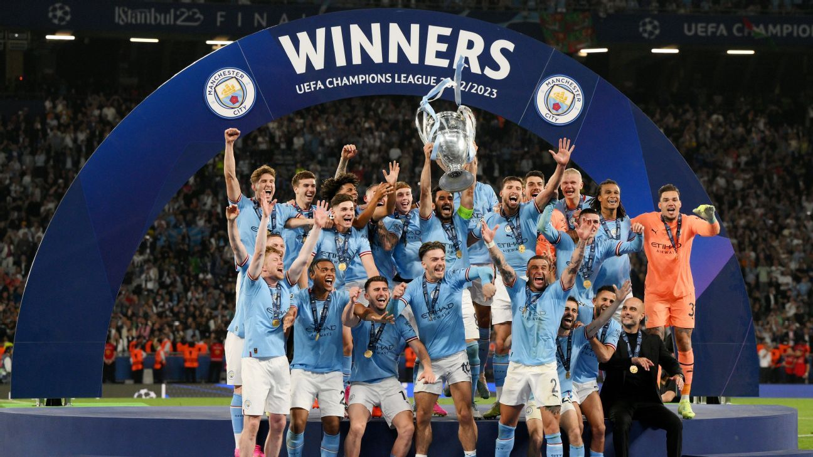

Season Stats
Manchester City's 2022/2023 Premier League Season
On May 21, 2023, Manchester City lifted the premier league trophy for the
third year in a row, making this their 9th Premier League title. Despite
Arsenal having led the league for 248 days (over 90% of the season),
Manchester City ended 5 points ahead of Arsenal, with a total of 89 points.

Manchester City's 2022/2023 FA Cup
On June 3, 2023, Manchester City beat rivals Manchester United 2-1 to win
their 7th FA cup. Ilkay Gundogan, city's captain and #8 opened up the score
in the first 13 seconds. However, in the 33rd minute Man City conceeded a
penalty, where Bruno Fernandes equalized. In the 51st Gundogan scored
another, giving city the lead, winning them the cup

Highlights of the 2023 FA Cup Final
Manchester City's 2022/2023 Champions League Season
Manchester City won the UEFA Champions League for the first time,
cementing their status among Europe's finest football clubs. Manchester City
will meet Inter Milan in the Champions League Final on June 7, 2023. Rodri
scored a goal for City in the 68th minute, giving them the Champions League.

